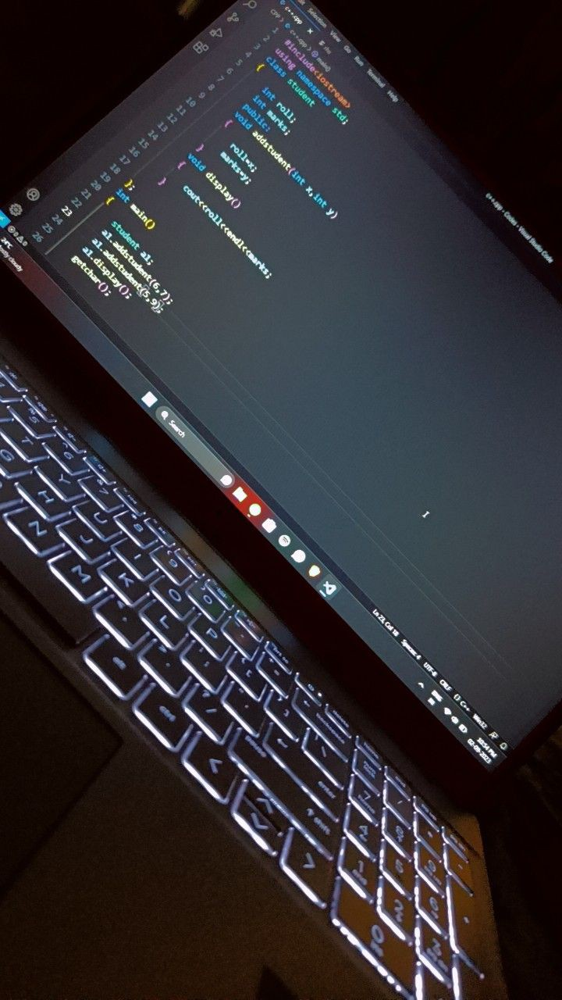

Featured Projects
1. AI Chatbot for customer service
This project involves designing an AI-powered chatbot aimed at improving customer serviceefficienct. The chatbot was built to handle common customer inquiries, provide product reccommendations, and assist with FAQs.
Technologies used: Python, Natural Language processing and flask
Highlights: The chatbot demonstrated a 70% succes rate in answering customer queries during testing, significantly reducing responses time.
2. Finance Tracker
A web-based application to help users track and analyse their daily financial transactions. The tracker provide features such as expense categorization, monthly budget analysis, and data visualizationthrough charts.
Technologies used: Python, Pandas, and Matplotlib for data processing and visualization, with a basic HTML/CSS front-end.
Highlights: This project strengthen my data manipulation skills and introduced me to basic financial analytics.
3. Predictive Housing Price Model
This project uses machine learning techniques to predict housing prices based on various features like location, size, and market trends. The model was trained on a dataset of housing prices and evaluatedfor accuracy.
Technologies used: Python, Scikit-learn, and Jupyter Notebook.
Highlights: Achieved an R square score of 0.85, indicating a strong correlation between predicted and actual prices. It helped me understand regression models and data preprocessing